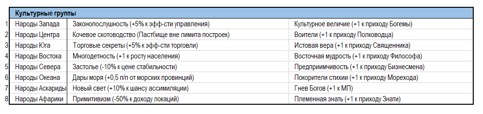
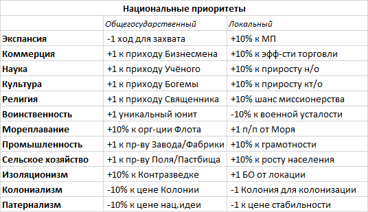

Численность населения прямо влияет на размер территории (и соответственно на то число построек, которые можно в ней возвести).
Если сокращение населения приводит к уменьшению размера, «лишние» постройки продолжают функционировать, однако новые строить нельзя. Наличие знака «+» в балансе страны в записи о размере провинции/города говорит о том, что там имеется свободное население и можно строить новые постройки.
При превышении числа построек над размером локации снижается эффективность производства (ЭП).
Максимальный размер территории равен 12, даже если численность населения превысит требуемый уровень.
Любая постройка занимает 1 слот. Постройки в одной провинции/городе нельзя дублировать (нельзя строить по несколько однотипных).
Стоимость строительства построек указана в балансе. Доступны для строительства только такие объекты, название которых имеется в списке зданий.
Города – особые вид территорий, отдельно указанные в балансе. Для них актуальны все статистические атрибуты (размер, численность населения, РВ и т.п.).
Максимально в одной провинции может быть не более 1-го города (за исключением провинций с 2-мя городами на старте игры или построения второго города на основании выполненной миссии).
Для создания города нужно потратить определенное кол-во кт/о (указано в балансе). При этом 5 тыс. провинции становятся жителями нового города.
Общее количество городов, доступных к основанию в ходе игры ограничено. Чем больше в стране городов, тем «дороже» обходится город.
Провинция отличается от города тем, что некоторые постройки доступны для строительства только в городе (подробнее об этом – в описании возводимых построек).
С позиции боевой механики важно понимать, что провинция не может находиться в осаде или быть взята штурмом. В провинции возможны только полевые сражения.
Город по умолчанию получает ту структуру культуры и вероисповедания населения, которые имеются в провинции. Однако, допустимо создание города с только одним из альтернативных этносов провинции.
Новые города наносятся на карту и дополняют игровой баланс создавшей ее страны.
Нельзя основывать новые города, если страна находится в состоянии войны.
Колонии – колонизируемые странами территории. Колонией становится территория, в составе построек которых есть постройка «Колония». В балансах указано сколько Колоний должна содержать локация для завершения колонизации (обычно 3 ед.). В Колониях можно возводить Форты и Фактории.
Численность населения провинции изменяется вследствие естественного прироста и миграции.
Если информация о численности населения содержит знак «+», то это говорит о том, что в данный ход население города/провинции приросло, если знак «-», то убыло.
Прирост населения зависит от следующих факторов:
1) Обеспеченность населения продовольствием.
2) Наличие медицинских построек.
3) Стихийные бедствия.
4) Боевые потери в ходе ведущихся войн.
5) Миграции.
6) Восстания.
На прирост населения кроме того влияют культурные и религиозные особенности населения.
К продуктам питания (п/п) относят:
1) Зерно;
2) Мясо;
3) Рыба;
4) Фрукты и Овощи.
Помимо этого, есть ряд ремесленных построек, которые вырабатывают п/п — Мельницы, Амбары и т.п.
Излишек п/п (если он имеет место) автоматически перераспределяются между территориями, где есть их нехватка или поступают на рынок. В балансе отражается состояние с обеспечением п/п каждой территории. Также баланс страны содержит информацию о том, сколько п/п производится и потребляется; какой баланс производства и потребления и какая ситуация с обеспеченностью п/п в целом по стране.
Рыба, вылавливаемая гражданским флотом (ТОРы) поступает лишь в те локации, которые имеют постройки Гавань и Порт, а также в Столицу страны.
Если в стране Голод, то происходит убыль населения и повышается РВ.
Мобилизационный потенциал (МП) – условное обозначение той части населения, которое может быть рекрутировано в армию.
МП для каждой страны указан в балансе и определяет максимальное число военных юнитов, которое страна может иметь. При недостатке МП (превышении размера армии над МП), формирование новых армейских юнитов, а также постройка новых кораблей невозможны.
Провинции с титульным этносом обеспечивают больший МП.
МП каждой провинции/города указан в балансе. Найм войск в локациях возможен в пределах значения МП. Юниты, нанятые в негородских локациях напрямую пополняют численность армии, находящуюся в этой локации. Юниты, нанятые в городах, могут быть размещены в них в качестве гарнизонов.
Население провинций обладают этническими отличиями (культурами). Как правило, культура столичной провинции страны является титульной культурой всего государства. Но не всегда. В игре могут присутствовать страны, в которых культура правящей династии обладает культурой, не совпадающей ни с одной из имеющихся в стране. Такая ситуация характерна для вновь образованных в ходе иноземного завоевания стран.
Наличие в стране провинций с негосударственной культурой увеличивает стоимость стабильности и является одним из факторов, вызывающих риск восстаний.
Каждая культура имеет ряд уникальных военных (а позднее и иных) особенностей:
Ассимиляция - это замена населением провинции одной этнической принадлежности на другую, считающуюся основной культурой данной страны (т.е. смена культуры провинции).
Ассимиляция возможна по желанию игрока в провинции с компактным проживанием двух этносов или в провинции, граничащей (в т.ч. в пределах 1 м/з) с той, чья культура будет перениматься.
Для успешного проведения ассимиляции требуется трата культурных очков. Стоимость ассимиляции указана в балансе страны.
Ассимиляция – не является процессом с гарантированным результатом и зависит от случайности.
Ассимиляция идет в несколько этапов: сначала происходит замена (появление второго этноса в провинции — вторая строчка баланса территории), потом этнос со второй строки баланса перемещается на первую — это говорит о том, что 2/3 населения стало этносом нужного вида. Окончательный этап — полное замещение нужным этносом населения данной провинции/города.
Кроме того, игрок может поменять титульный этнос страны на другой, проживающий в этот момент в его стране. Для этого необходимо заключить брак с местной знатью и заявить о смене титульного этноса. Страна при этом теряет -2 стаб. (как при смене религии).
Рабы являются не только специфичным товаром, но и источником доходов для страны.
Доходы, получаемые от эксплуатации Рабов, указываются в балансе. Численность Рабов может накапливаться (т.е. если страна «производит» или покупает Рабов в текущий ход, то в след.ход их число увеличится на кол-во «произведенных» или купленных). Если происходят события Восстание Рабов, то численность Рабов сокращается.
Увеличение числа Рабов происходит также за счёт грабежей в ходе войн.
Численность Рабов влияет на вероятность события «Восстание Рабов».
Восставшие рабы захватывают локацию, но победа рабов не ведет к возможности отделения восставшей провинции (как в случае с обычным мятежом).
Национальный приоритет – выбранная Игроком специализация своего народа.
Всего можно иметь до 2-х приоритетов.
Общее количество отдельно взятых приоритетов народами мира не должно быть выше 10-ти в каждой группе.
Особенностью приоритетов является то, что они распространяют свое действие на весь этнос в целом. Поэтому приоритет «работает» не только на страну Игрока, но и на другие (возможные) страны, где данный этнос является государственным.
Принимать/менять приоритеты можно за о/пр.
Приоритет «Промышленность» доступен при принятии страной соответствующего института (см. ниже).